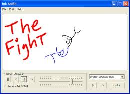
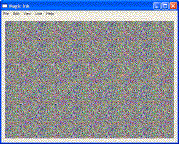
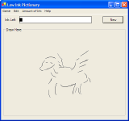
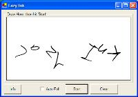
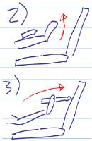

| | Tablet PC Stuff"The pen is mightier than the mouse!"
- Lewey Geselowitz I'm a huge fan of the Tablet PC, and it's one of those things that definatly walks in the right direction of the future. It also lets us try all sorts of interesting things with user-interfaces and generally makes an fun platform to develop for. On this page you'll find information about a few little apps I wrote which I believe show off just a few of the interesting new areas we can explore with Tablets. Many of these and tons of other Tablet PC software can be found at Tablet PC Post, considered by many as THE source for Tablet software Most of these applications have been featured at Tabula PC, Tablet PC Buzz, and Tablet PC Developer An Ink base animation program. Essentially it lets you create animations as fast as you can draw the few simple key frames which make them up. Simply draw one frame, adjust the time, draw another frame, and the system will make a "calculated geuss" as to what the frames in between look like. This makes it extemely easy to create great looking animations at a couple flicks of the wrist.
AniEd also won the Grand Prize at TabletPCDeveloper.com for best PowerToy. |  |
| Magic Ink lets you interactivly draw 3D images similar to the posters popularized by the Magic-Ink company. So now you can make your own, as your drawing just adjust the pressure with which your pressing down, and the line your drawing will appear at a different height. This makes it fun and very easy to create great looking 'real 3D' images on your Tablet. |  |
| Try playing Pictionary, when your pen's ink keeps running out! This fun little app lets you only draw so much while trying to win at Pictionary. It adds a whole new level to the great old game, and also helps train your artistic skills. |  |
| Imagine you have stuck up one of those letters people put on their houses and only put in the last screw; as you let go of the letter it will swing back and forth on that screw and then finally stop once it has run out of energy. This is exactly what Lazy Ink does, only with any 'ink' you draw. Really this is just a silly little graphics idea I couldn't resist implimenting. |  |
An amazing device you attach to your arm while using your Tablet PC in laptop mode. With a flick of your wrist your tablet's pen shoots into your hands from it's place on your arm, and you go from typing on your keyboard to writing on the screen (in under a second with no effort at all). The pen then folds back away with another flick of your wrist and your back to typing!
Note: This is just one of my crazy ideas, it doesn't actually exist. |  |
| Abandoned. This was going to be a powerful and easy to use animation editor using the same interaction model as Ink AniEd. But I eventually realised that any real editor requires way to much work which I simply don't have the time to do. |
|